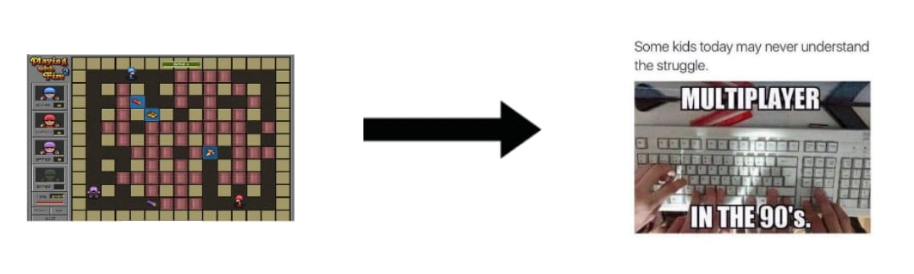
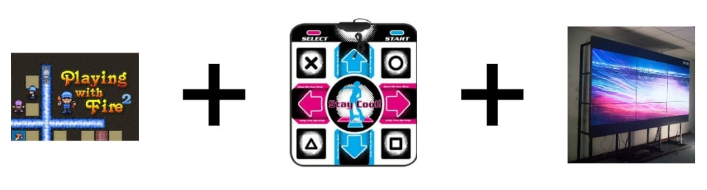

Voor deze opdracht moesten we een leuke sociale, speelse interface bedenken die positiviteit uitstraalt in het HHS hoofdgebouw. Vervolgens moesten we wat onderzoek doen naar playful-interfaces die niet in de hoorcollega was behandeld.
Tijdens het bedenken van een leuk interface voor de HHS gebouw dacht ik me wat ik zelf leuk zou vinden om te spelen. Ik dacht terug naar wat ik zat te spelen toen ik een kind was en al snel kwam op het spel Playing with fire 2. Dit spel was een van de leukste spellen dat ik zelf begin 2000 met mijn neven en nichten ging spelen op 1 toetsenbord.

Het was een van de eerste mutliplayer games dat ik zelf samen met andere kon spelen. Zelf zou ik het supercool vinden om dit spel met meerdere mensen weer opnieuw te kunnen spelen. Daarom besloot ik dit spel als playful interaction concept te gebruiken.
De opbouw van het spel zou er exact hetzelfde uitzien als PWF2. Dit omdat de bekendheid op wekt bij mensen waardoor ze er zin in krijgen om het spel juist te spelen. Maar in plaats van een toetsenbord moeten de deelnemers goed in beweging komen. Daarom zullen ze als console gebruik maken van een dansmat. Door op de pijlen dat op de grond wordt geplaats te drukken met hun voet zorgen ze ervoor dat hun pop op het beeldscherm in beweging komt. Om iedereens aandacht goed te trekken moet er gebruik gemaakt worden van een groot scherm. Zo kan iedereen zien wat er gebeurt. Geluid kan spanning opwekken bij deelnemers waardoor ze hun stappen veel sneller zullen zetten, dus zal er altijd een achtergrondmuziek afspelen. Om de ultieme ervaren aan de deelnemers te geven zullen ze trillingen onder hun voeten voelen op het moment dat een laser afgaat.

Het spel dat gespeeld gaat worden op het HHS gebouw zou wel zijn eigen draai hebben.
1. Er kunnen drie personen deelnemen aan het spel de vierde persoon is de computer zelf
2. Ten eerste zal het in de stijl gemaakt moeten worden van HHS.
3. Deelnemers moet hun tegenstander uitschakelen doormiddel van een laser. Als de deelnemer in de omgeving van een laser is en de laser gaat af dan is de deelnemer uitgeschakeld voor 5 seconden.
4. Op het scherm zullen ze verschillende obstakels zien in de vorm van dozen. De dozen zijn stuk te maken door met een hamer of met een laser.
5. Deelnemers hebben een beperkt hoeveelheid lasers die ze kunnen gebruiken. Om meer lasers te vinden moeten ze de dozen stuk maken en de lasers vinden.
6. Alleen de groene dozen gaan stuk en de zilveren dozen kunnen deelnemers verplaatsen. Door de dozen te verplaatsen kunnen ze hun tegenstander blokkeren
7. In de tussen tijd zullen er op verschillende plekken af en toe gouden muntjes voor 2 seconden tevoorschijn komen en weer verdwijnen. Deze munten zijn extra levens, doormiddel van deze muntjes hebben ze geen time out.
8. Wie het meest een timeout heeft in de 2 minuten speeltijd is de verliezer.